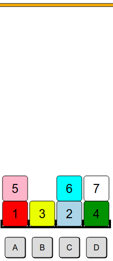

Solution
On fait passer les blocs numéro 3 et numéro 2 par la pile du milieu.
On utilie les deux piles du milieu pour faire transiter les quatre blocs du haut, afin de libérer le bloc numéro 1. On fait attention de faciliter le travail de rangement final, en mettant toujous un bloc plus petit sur un bloc plus grand : le bloc 2 sur le 3, et le bloc 4 sur le 5. Ceci permet de rendre ces blocs accessibles dans le bon ordre pour les placer plus tard directement sur la dernière pile.
|

|

|
Pour pouvoir déplacer le bloc 1 vers la dernière pile, il faut retirer les blocs 5, 4 et 7 de ces deux piles.
Si on les place directement sur les deux piles du milieu, on va empiler des blocs sur les blocs 2 et 3, et il faudra tous les retirer ensuite pour pouvoir placer ces deux blocs sur la dernière pile.
Pour éviter ces nombreux déplacements futurs, il faut anticiper et par exemple préparer l'accès rapide aux blocs 2 et 3 et dans le bon ordre. On va donc retirer le bloc 6, pour pouvoir déplacer le bloc 2 sur le bloc 3.
Il faut décider entre mettre le bloc 6 au dessus du 5 ou bien au dessus du 7.
Il est nettement plus intéressant de mettre le bloc 6 au dessus du bloc 5, car on pourra ensuite placer les blocs 7, 6, 5 et 4 sur la pile C, dans cet ordre. Cela permettra leur transfert rapide, plus tard, vers la dernière pile.
Voici les étapes clés de la séquence complète :
Une autre approche consistait à commencer par déplacer le bloc 3 sur la pile C, pour pouvoir faire une place pour les blocs 7, 5 et 4 et les y placer dans l'ordre. La suite se trouve assez facilement.
C'est de l'informatique !
Ce sujet fait intervenir ce qu'on appelle en information la notion d'heuristique. Au début, on ne sait pas trop dans quelle direction partir, mais on peut estimer que certains coups sont meilleurs que d'autres. Par exemple, il vaut mieux éviter de déposer un cube ayant un certain numéro au-dessus d'un cube ayant un numéro plus petit.
Certains programmes informatiques utilisent des algorithmes heuristique : plutôt que d'explorer toutes les possibilités dans n'importe quel ordre, on va faire en priorité des "bons choix", par exemple ici on va en priorité déposer des cubes sur des piles ne contenant que des cubes de numéro supérieurs, lorsque c'est possible.